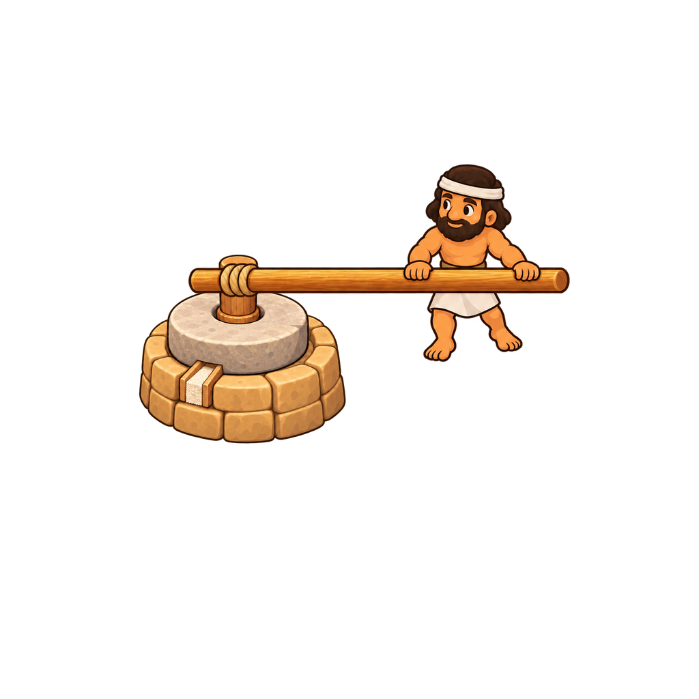

Mill downward stroke
16-frame draft · approved start and end proportions
01 / 16
The mill is the same copied layer in every frame. Generated farmer scale, lever length and foot contact still vary between poses; this draft needs further animation cleanup.